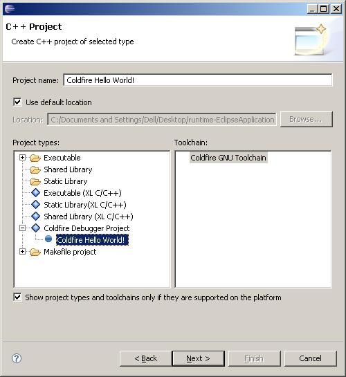
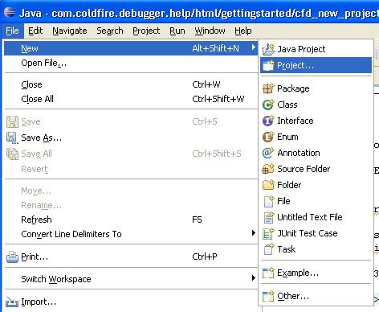
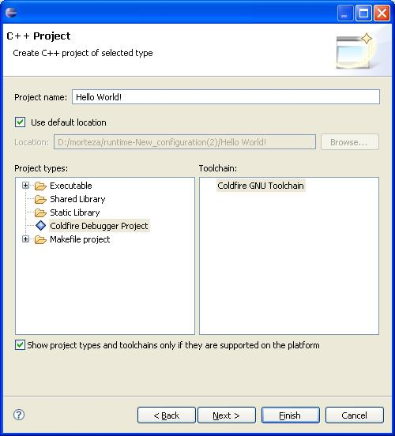

Creating Project from Template
The Coldfire debugger provides some project template to make getting rid of some hard tasks easy. A
programmer should add includes after creating raw Coldfire project, create main file, build Makefile, etc.
The templates are avaiable at the time you are selecting the project type. Just expand the Coldfire Debugger
Project when you select the project name, and select one of the avaiable templates. The most useful and
expandable one is Hello World! template. It makes source and includes folder, add corresponding includes and
create appropriate makefile ready to build.

The following describe steps to create a project from Hello World! template.
Creating Hello World! Project
- Select File->New->Project menu.

- In the new project wizard page, expand C or C++ folder and select C or C++
project. Then click Next.
- Enter the project name. Expand Coldfire Debugger Project from the project
types list then select Coldfire Hello World! entry, and select Coldfire GNU toolchain as
the project toolchain. Click Finish (By default the Coldfire Debugger will choose m68k-elf
as toolchain. But you can change the makeing parameters by clicking the next button).A new project
will be added to the workspace package explorer view.
At this time the debugger only supports Debug method. You can
remove debug informations inside the Project Builder properties by removing the
-g parameters tick.
